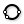

 Circle 3Pt
Component Index > Grasshopper > Curve > Primitive > Circle
Create a circle defined by three points.
Inputs
| Name | ID | Description | Type |
|---|---|---|---|
| Point A | A | First point on circle | Point |
| Point B | B | Second point on circle | Point |
| Point C | C | Third point on circle | Point |
Outputs
| Name | ID | Description | Type |
|---|---|---|---|
| Circle | C | Resulting circle | Circle |
| Plane | P | Circle plane | Plane |
| Radius | R | Circle radius | Number |
Copyright © 2016 Robert McNeel & Associates.